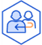

개인정보처리방침
대전광역시 동구 개인정보 처리방침
대전광역시 동구는 정보주체의 자유와 권리 보호를 위해 「개인정보
보호법」 및 관계 법령이 정한 바를 준수하여, 적법하게 개인정보를
처리하고 안전하게 관리하고 있습니다. 이에 「개인정보보호법」
제30조에 따라 정보주체에게 개인정보 처리에 관한 절차 및 기준을
안내하고, 이와 관련한 고충을 신속하고 원활하게 처리할 수 있도록
하기 위하여 다음과 같이 개인정보 처리방침을 수립·공개합니다.이
방침은 별도의 설명이 없는 한 대전광역시 동구에서 처리하는 모든
개인정보 파일에 적용됩니다. 다만, 소관업무를 처리하기 위해 각 부서
및 소속기관에서 별도의 개인정보 처리방침을 제정·시행하는 경우 그
방침에 따르고 소속기관(부서)이 운영하는 홈페이지에 게시함을
알려드립니다.
대전광역시 동구 개인정보 처리방침
일반 개인정보 수집
아이디,비밀번호,연락처,이메일 등
※ 세부항목은 개인정보 처리방침 본문 확인
개인정보 처리목적
민원사무 및 행정업무 처리 등
개인정보의 보유 기간
개인정보는 탈퇴 시 파기 일부는
관련 법령에 따라 상이함
개인정보의 제3자 제공
※ 세부항목은 제3자 제공 목록 확인

처리위탁
※ 세부항목은 위탁현황 확인
고충처리부서
회계정보과 042-251-4093
【목차】
※ 목차 클릭 시 해당 본문으로 이동합니다.
제1조(개인정보의 처리 목적)
제2조(개인정보의 처리 및 보유기간)
제3조(처리하는 개인정보 항목)
제4조(개인정보파일 등록 현황)
제5조(개인정보의 제3자 제공에 관한 사항)
제6조(개인정보 처리의 위탁에 관한 사항)
제7조(개인정보의 파기절차 및 파기방법)
제8조(정보주체와 법정대리인이 권리·의무 및 그 행사방법에 관한
사항)
제10조(개인정보를 자동으로 수집하는 장치의 설치·운영 및 그
거부에 관한 사항)
제11조(개인정보 보호책임자에 관한 사항)
제12조(개인정보의 열람 청구를 접수·처리하는 부서)
제13조(정보주체의 권익침해에 대한 구제 방법)
제1조(개인정보의 처리 목적)
-
① 대전광역시 동구는 다음의 목적을 위하여 개인정보를
처리합니다. 처리하고 있는 개인정보는 다음의 목적 이외의
용도로는 이용되지 않으며, 이용 목적이 변경되는 경우에는
「개인정보 보호법」 제18조에 따라 별도의 동의를 받는 등
필요한 조치를 이행할 예정입니다.
- 1. 민원사무처리 : 민원인의 신원 확인, 민원사항 확인, 사실조사를 위한 연락·통지, 처리결과 통보 등의 목적으로 개인정보를 처리합니다.
- 2. 행정업무 처리 : 민원사무 처리 이외의 행정업무 처리는 법령 및 조례에 근거한 경우에만 개인정보를 처리합니다.
- ② 개인정보 유출사고 시 「개인정보의 안전성 확보조치 기준(개인정보보호위원회 고시)」에 의거, 관련 모든 책임은 유출 기관(실·과·소·동 및 의회 등)의 분야별 개인정보보호책임자 및 개인정보 취급자(단위업무별 담당자)에게 있습니다.
제2조(개인정보의 처리 및 보유기간)
- ① 대전광역시 동구는 법령에 따른 개인정보 보유·이용 기간 또는 정보주체로부터 개인정보를 수집 시 동의 받은 개인정보 보유·이용기간 내에서 개인정보를 처리하고 보유합니다.
- ② 대전광역시 동구가 처리하는 개인정보의 처리 및 보유기간에 대한 자세한 사항은 제4조(개인정보파일 등록 현황)을 통해 확인하시기 바랍니다.
제3조(처리하는 개인정보 항목)
- 대전광역시 동구에서 처리하는 개인정보는 소관업무 및 법령에서 정한 최소한의 개인정보만을 처리하며 자세한 사항은 제4조(개인정보파일 등록 현황)을 통해 확인하시기 바랍니다.
제4조(개인정보파일 등록 현황)
- ① 대전광역시 동구는 개인정보를 개인정보보호 종합지원 포털에 공표한 “개인정보 운영목적” 내에서만 개인정보를 처리하고 있으며, 「개인정보 보호법」 제32조에 따라 개인정보파일을 운영하고 있습니다.
-
② 개인정보파일의 처리목적·보유기간 및 항목은 개인정보파일의
특성에 따라 달리 규정하고 있으며, 개인정보파일별 상세한
내용은 개인정보보호 포털을 통해 확인하시기 바랍니다.
- ※ 개인정보보호종합지원시스템 (http://www.privacy.go.kr) → 개인서비스 → 정보주체 권리행사 → 개인정보 열람등요구 → 개인정보파일 목록 검색 → 기관명에 ‘동구’ 입력 후 ‘대전광역시 동구’ 선택
제5조(개인정보의 제3자 제공에 관한 사항)
-
대전광역시 동구는 원칙적으로 정보주체의 개인정보를 수집·이용
목적으로 명시한 범위 내에서 처리하며, 다음 각 호의 경우를
제외하고는 정보주체의 사전 동의 없이는 본래의 목적 범위를
초과하여 처리하거나 제3자에게 제공하지 않습니다.
- 1. 정보주체로부터 별도의 동의를 받은 경우
- 2. 법률에 특별한 규정이 있는 경우
- 3. 정보주체 또는 법정대리인이 의사표시를 할 수 없는 상태에 있거나 주소불명 등으로 사전 동의를 받을 수 없는 경우로서 명백히 정보주체 또는 제3자의 급박한 생명, 신체, 재산의 이익을 위하여 필요하다고 인정되는 경우
- 4. 개인정보를 목적 외의 용도로 이용하거나 이를 제3자에게 제공하지 아니하면 다른 법률에서 정하는 소관 업무를 수행할 수 없는 경우로서 보호위원회의 심의·의결을 거친 경우
- 5. 조약, 그 밖의 국제협정의 이행을 위하여 외국정보 또는 국제기구에 제공하기 위하여 필요한 경우
- 6. 범죄의 수사와 공소의 제기 및 유지를 위하여 필요한 경우
- 7. 법원의 재판업무 수행을 위하여 필요한 경우
- 8. 형 및 감호, 보호처분의 집행을 위하여 필요한 경우
제6조(개인정보 처리의 위탁에 관한 사항)
- ① 대전광역시 동구는 위탁계약 체결 시 「개인정보 보호법」 제26조에 따라 위탁업무 수행목적 외 개인정보 처리금지, 기술적·관리적 보호조치, 재위탁 제한, 수탁자에 대한 관리·감독, 손해배상 등 책임에 관한 사항을 계약서 등 문서에 명시하고, 수탁자가 개인정보를 안전하게 처리하는지를 감독하고 있습니다.
- ② 위탁업무의 내용이나 수탁자가 변경될 경우에는 지체 없이 본 개인정보 처리방침을 통하여 공개하도록 하겠습니다
제7조(개인정보의 파기절차 및 파기방법)
-
① 이용자의 개인정보는 보유기간의 경과, 처리목적 달성 등
개인정보가 불필요하게 되었을 때에는 지체없이 해당 개인정보를
파기합니다. 개인정보 파기의 절차, 기한 및 방법은 다음과
같습니다.
- 1. 파기절차이용자의 개인정보는 보유기간이 경과하였거나 처리목적을 달성한 즉시 개인정보책임자의 책임 하에 내부방침 절차에 따라 파기합니다.
-
2. 파기방법
- 가. 전자적 파일 형태인 경우 : 복원이 불가능한 방법으로 영구삭제
- 나. 전자적 파일의 형태 외의 기록물, 인쇄, 서면, 그 밖의 기록매체인 경우 : 파쇄 또는 소각
- ② 이용자로부터 동의받은 개인정보 보유기간이 경과하거나 처리목적이 달성되었음에도 불구하고 다른 법령에 따라 개인정보를 계속 보존하여야 하는 경우에는, 해당 개인정보(또는 개인정보파일)를 별도의 데이터베이스(DB)로 옮기거나 보관장소를 달리하여 보존합니다.
제8조(정보주체와 법정대리인이 권리·의무 및 그 행사방법에 관한 사항)
- ① 정보주체는 언제든지 개인정보 열람·정정·삭제·처리정지 요구 등의 권리를 행사할 수 있습니다.※ 만 14세 미만 아동에 관한 개인정보의 열람등 요구는 법정대리인이 직접 해야 하며, 만 14세 이상의 미성년자인 정보주체는 정보주체의 개인정보에 관하여 미성년자 본인이 권리를 행사하거나 법정대리인을 통하여 권리를 행사할 수도 있습니다.
- ② 권리 행사는 「개인정보 보호법」 시행령 제41조 제1항에 따라 서면, 전자우편, 모사전송(FAX) 등을 통하여 하실 수 있으며, 대전광역시 동구는 이에 대해 지체없이 조치하겠습니다.
- ③ 권리 행사는 「개인정보 보호법」 시행령 제41조 제1항에 따라 서면, 전자우편, 모사전송(FAX) 등을 통하여 하실 수 있으며, 대전광역시 동구는 이에 대해 지체없이 조치하겠습니다.
- ④ 개인정보 열람 및 처리정지 요구는 「개인정보 보호법」 제35조 제4항, 제37조 제2항에 의하여 정보주체의 권리가 제한 될 수 있습니다.
- ⑤ 개인정보의 정정 및 삭제 요구는 다른 법령에서 그 개인정보가 수집 대상으로 명시되어 있는 경우에는 그 삭제를 요구할 수 없습니다.
- ⑥ 정보주체 권리에 따른 열람의 요구, 정정·삭제의 요구, 처리정지의 요구 시 열람 등 요구를 한 자가 본인이거나 정당한 대리인인지를 확인합니다.
제9조(개인정보 안전성 확보조치에 관한 사항)
-
대전광역시 동구는 「개인정보 보호법」 제24조 제2항, 제29조
및 시행령 제30조에 따라 개인정보의 안전성 확보를 위해 다음과
같은 조치를 취하고 있습니다.
- 1. 내부관리계획의 수립·시행개인정보의 안전성 확보조치 기준에 따라 내부관리계획을 수립 및 시행합니다.
- 2. 개인정보 취급직원의 최소화 및 교육개인정보를 취급하는 직원은 반드시 필요한 인원에 한하여 지정·관리하고 있으며 취급직원을 대상으로 안전한 관리를 위한 교육을 실시하고 있습니다.
- 3. 개인정보에 대한 접근 제한개인정보는 암호화 등을 통해 안전하게 저장 및 관리되고 있습니다. 또한 중요한 데이터는 저장 및 전송 시 암호화하여 사용하는 등의 별도 보안기능을 사용하고 있습니다.
- 4. 접속기록의 보관개인정보처리시스템에 접속한 기록(웹 로그, 요약정보 등)을 안전하게 보관하고 있으며, 최소 1년 이상 보관·관리하는 접속기록에 대하여 월1회 분석점검하고 있습니다.
- 5. 개인정보의 암호화개인정보는 암호화 등을 통해 안전하게 저장 및 관리되고 있습니다. 또한 중요한 데이터는 저장 및 전송 시 암호화하여 사용하는 등의 별도 보안기능을 사용하고 있습니다.
- 6. 보안프로그램 설치 및 주기적 점검·갱신해킹이나 컴퓨터 바이러스 등에 의한 개인정보 유출 및 훼손을 막기 위하여 보안프로그램을 설치하고 주기적으로 갱신·점검하고 있습니다.
- 7. 비인가자에 대한 출입 통제개인정보를 보관하고 있는 개인정보처리시스템의 물리적 보관 장소를 별도로 두고 이에 대해 출입통제 절차를 수립·운영하고 있습니다.
- 8. 재해·재난대비 위기대응화재, 홍수, 단전 등의 재해·재난 발생 시 개인정보시스템 보호 및 복구를 위한 위기대응 절차를 수립, 운영하고 있습니다.
제10조(개인정보를 자동으로 수집하는 장치의 설치·운영 및 그 거부에 관한 사항)
- ① 대전광역시 동구는 이용자에게 개별적인 맞춤서비스를 제공하기 위해 이용 정보를 저장하고 수시로 불러오는 ‘쿠키(cookie)’를 사용합니다.
-
② 쿠키는 웹사이트를 운영하는데 이용되는 서버(http)가
이용자의 컴퓨터 브라우저에게 보내는 소량의 정보이며
이용자들의 PC 컴퓨터내의 하드디스크에 저장되기도 합니다.
- 가. 쿠키의 사용목적 : 이용자가 방문한 각 서비스와 웹 사이트들에 대한 방문 및 이용형태, 인기 검색어, 보안접속 여부, 등을 파악하여 이용자에게 최적화된 정보 제공을 위해 사용됩니다.
-
나. 쿠키의 설치·운영 및 거부 : 웹브라우저 옵션 설정을
통해 쿠키 허용, 쿠키 차단 등의 설정을 할 수 있습니다.
- - Edge: 웹브라우저 우측 상단의 설정 메뉴 > 쿠키 및 사이트 권한 > 쿠키 및 사이트 데이터 관리 및 삭제
- - Chrome: 웹브라우저 우측 상단의 설정 메뉴 > 개인정보 및 보안 > 쿠키 및 기타 사이트 데이터
- - Whale: 웹브라우저 우측 상단의 설정 메뉴 > 개인정보 보호 > 쿠키 및 기타 사이트 데이터
- 다. 쿠키 저장을 거부할 경우 맞춤형 서비스 이용에 어려움이 발생할 수 있습니다.
제11조(개인정보 보호책임자에 관한 사항)
- 대전광역시 동구는 개인정보 처리와 관련한 정보주체의 불만처리 및 피해구제 등을 위해 아래와 같이 개인정보 책임자를 지정하고 있습니다.
| 구분 | 개인정보보호책임자 | 분야별 개인정보보호 책임자 | 개인정보보호 담당자 |
|---|---|---|---|
| 부서 | 행정지원국 | 각 부서 | 회계정보과 |
| 성명 | 안옥 | 부서장 | 이수아 |
| 연락처 | 042-251-4020 | - | 042-251-4093 |
제12조(개인정보의 열람 청구를 접수·처리하는 부서)
-
① 개인정보 열람 청구 접수 처리 부서: 해당 개인정보파일 보유
및 관리 부서• (문의) 개인정보보호담당자 : 회계정보과
042-251-4093 제1항의 열람 청구 접수 처리 부서 이외에
개인정보보호위원회의 ‘개인정보보호 포털’을 통해서도
개인정보를열람 청구를 하실 수 있습니다.
- ※ 개인정보보호위원회 개인정보보호 종합지원포털 (http://www.privacy.go.kr) → 개인서비스 → 개인정보 열람등요구(공공아이핀을 통한 실명인증 필요)
제13조(정보주체의 권익침해에 대한 구제 방법)
-
① 정보주체는 개인정보침해로 인한 구제를 받기 위하여 개인정보
분쟁조정위원회, 한국인터넷진흥원 개인정보침해신고센터 등에
분쟁해결이나 상담 등을 신청할 수 있습니다. 이 밖에 기타
개인정보침해의 신고, 상담에 대하여는 아래의 기관에
문의하시기 바랍니다.
- 1. 개인정보분쟁조정위원회 : (국번없이) 1833-6972 (http://www.kopico.go.kr)
- 2. 개인정보침해신고센터 : (국번없이) 118 (http://privacy.kisa.or.kr)
- 2. 개인정보침해신고센터 : (국번없이) 118 (http://privacy.kisa.or.kr)
-
② 대전광역시 동구는 정보주체의 개인정보자기결정권을
보장하고, 개인정보침해로 인한 상담 및 피해 구제를 위해
노력하고 있으며, 신고나 상담이 필요한 경우 아래의 담당부서로
연락해 주시기 바랍니다.
- 개인정보보호 관련 고객 상담 및 신고
- 부서명 : 회계정보과
- 담당자 : 이수아
- 연락처 : 042-251-4093
-
③ 「개인정보 보호법」 제35조(개인정보의 열람),
제36조(개인정보의 정정·삭제), 제37조 (개인정보의 처리정지
등)의 규정에 의한 요구에 대하여 공공기관의 장이 행한 처분
또는 부작위로 인하여 권리 또는 이익의 침해를 받은 자는
행정심판법이 정하는 바에 따라 행정심판을 청구할 수 있습니다.
- 중앙행정심판위원회 : (국번없이) 110 (http://simpan.go.kr)